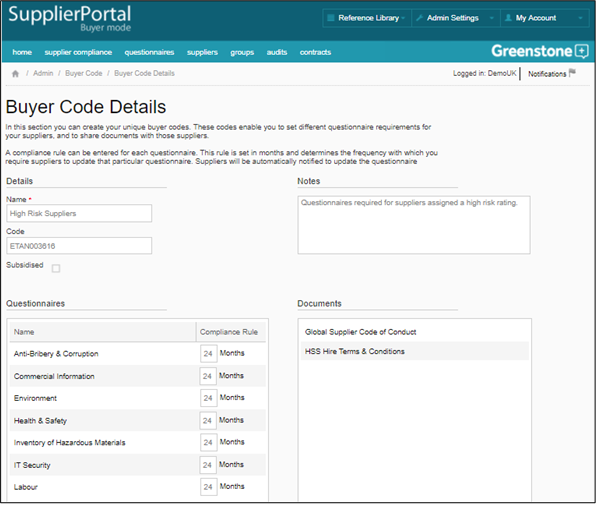

Buyer codes are used to create secure connections between Buyers and Suppliers, whilst driving which questionnaires the suppliers are required to respond to and determining which documents are made available. All suppliers must have a Buyer code in order to select you as a Buyer and publish their data to you.
For each code, select which questionnaires and documents are relevant and for each questionnaire, determine the Compliance Rule; this rule is set in months and determines the frequency with which you require suppliers to update that particular questionnaire. Suppliers will be automatically notified to update the information.
You can view and edit a Buyer code at any time.

">